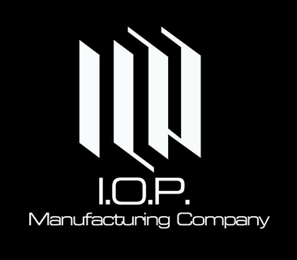
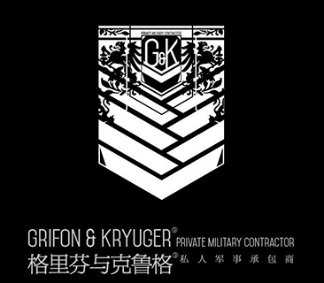
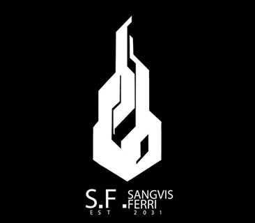

全稱為重要行動原形機械製造公司，在第三次世界大戰期間成立的工業製造公司。格里芬的戰術人形主要供應商。
以帕斯卡為首的16LAB研究所也掛名在該公司底下，與其共享所開發的新技術。
與鐵血工造本來有著良好的關係，但因為在戰爭期間互相搶奪營業額、戰後又被挖走不少優秀的技術人員而交惡。
和格里芬有簽訂協議，若格里芬擁有的戰術人形過多，或是在戰場上有回收到其他戰術人形的話可以交由IOP回收處理。

2053年，由退伍軍人克魯格成立的安全承包公司，全名為「格里芬與克魯格（Griffin＆Kruger）私人安全承包公司」。
其運作資金主要由自身人脈拉攏的政府和財團提供。
起初，格里芬和其他安全承包商一樣，以人類僱傭兵為主力部隊。
但一年後，第一代戰術人形問世，讓克魯格看到了新的可能。
他希望購買戰術人形作為格里芬的主要戰鬥力，以減少人類的傷亡。

全稱鐵血工業製造公司（SANGVIS FERRI），老牌工業製造公司，成立於北蘭島事件後。
在各大工業公司因為污染爆發而措手不及時，鐵血工造依靠全面和精良的軍工產品，在當地佔據了廣闊的市場。
第三次世界大戰結束後，鐵血工造接納了前90wish成員萊柯瑞斯，並利用人工智慧開發了全新的戰術人形。
蝴蝶事件之後，鐵血工造的人形失控，並殺死所有工作人員。
現在的鐵血已經完全落入AI的控制，對於人類而言，它們是敵人，怪物和殺人兇手。